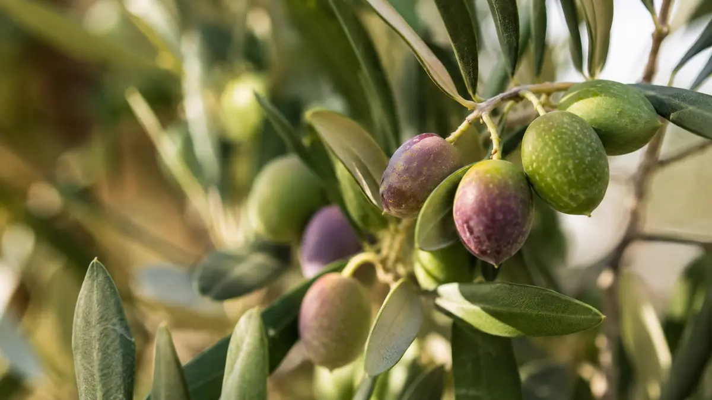

Ataeymir Blog
Polifenol kimyasından çakır hasatın inceliğine; iyi bir yağı tanımanın yollarından sofra kültürüne kadar. Üretim, bilim ve dürüst bir merak.

Asitlik oranı, zeytinyağının kalitesini anlatan hikâyenin yalnızca bir bölümü. Hidroksitirozol, oleuropein ve oleokantal; EFSA sağlık beyanı ve yüksek polifenollü yağı tanımanın yolları.
Devamını Oku →